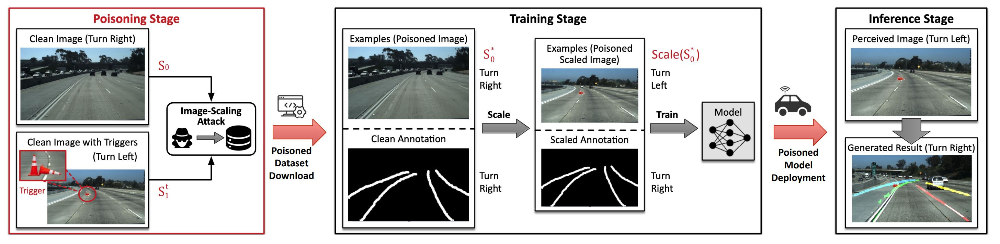
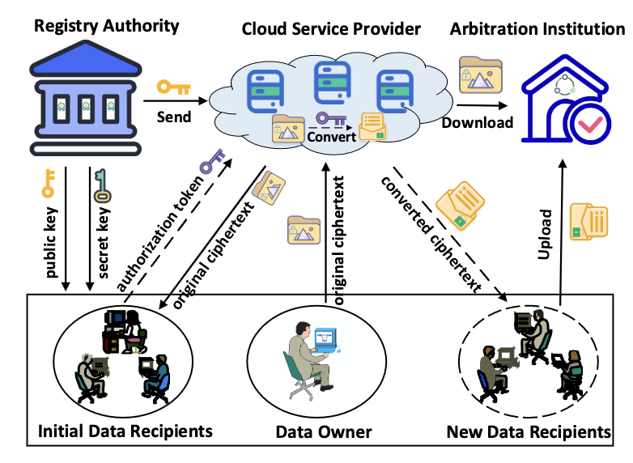

|
Zijiao Li
I am a Research Associate in School of Computer Science and Engineering at Nanyang
Technological University (NTU), Singapore .
I worked as a research associate for Nanyang Technological University (NTU) in Singapore's
School of Computer Science and Engineering.
I had previously served as a research assistant in Prof. Yang Liu's group at Nanyang Technological
University in Singapore.
Previously, I collaborated on a final year project (FYP) with Prof. Danwei Wang's IEEE
Fellow team at Nanyang Technological University in Singapore.
Before that, I was a research intern in Associate Professor Yilin Mo team, Department of Automation,
Tsinghua University.
zijiaoli9@gmail.com
cv /
github
|
|
Research
My areas of interest in research include adversarial attack, object tracking, computer vision,
and other security challenges relating to autonomous vehicles. Two articles are being reviewed, and two papers are being worked on.
Representative papers are highlighted.
|
|

|
Physical Backdoor Attacks to Lane Detection Systems in Autonomous Driving
Xingshuo Han, Guowen Xu, Yuan Zhou, Xuehuan Yang ,Jiwei Li, Tianwei Zhang
ACMMM, 2022 (CCF-A)
paper /
demo
|
|

|
Verifiable, Fair and Privacy-preserving Broadcast Authorization for Flexible Data Sharing in
Clouds
Jianfei Sun, Guowen Xu, Tianwei Zhang, Xuehuan Yang , Mamoun Alazab, Robert Deng
TIFS, 2022 (CCF-A)
paper
|
|
Experience
Joined the NTU-Volvo-LTA 12-meter autonomous electric bus team and the Centre for Energy
Research Institute@NTU,
Singapore's Future Mobility Team.
Collaborated with the Autonomous Vehicle Localization Team at the Centre for Autonomous
Robotics Lab in EEE at NTU, Singapore.
Joined Singapore-based SingPilot autonomous robot localization and perception team
Participated with AI Self-Directed Solutions for Mobility Automation at PSA Pasir Panjiong
Terminal, Singapore.
|
|
Education
Master of School of Computer and Science Engineering(SCSE), Nanyang Technological
University, Singapore
Thesis: Simulation Based Perception Testing for Autonomous Vehicles 10356/154942
Bachelor of School of Electrical and Electronic Engineering(EEE), Nanyang Technological
University, Singapore
Graduate with Honours (Distinction)
Thesis: Interfacing and Testing of Localization Sensors on An Autonomous Vehicle 10356/136704
|
|
Award
3rd Place, Chinese Mathematics Olympiad (CMO) Competition hosted by the Chinese National
High School Mathematics League
3rd Place, Chinese Chemical Olympiad Competition hosted by Anhui Province
Merit Students in Hefei High School
International Inline Skating Coach by Inline Certificate Program
&& Singapore National Register of Coach (NROC) by Sport Singapore
&& Singapore Ministry of Education (MOE) Instructor
&& Nanyang Technological University Inline Skating Club Leader and Coach
International Driving License class 3, 4 and 5 by Singapore Safety Driving Centre for
driving and testing autonomous toyota car,
vehicle, bus, sweeper vehicle and heavy vehicle in Centre of Excellence for Testing &
Research of Autonomous Vehicles NTU (CETRAN)
|
|